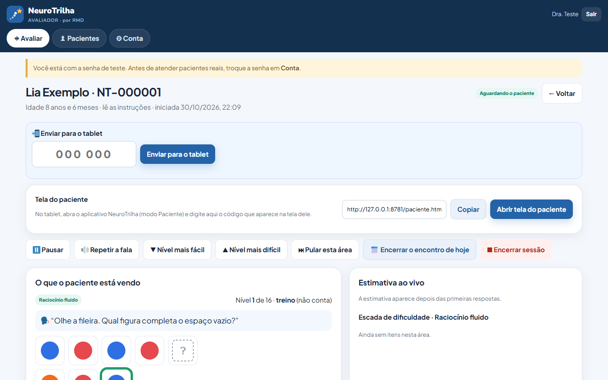
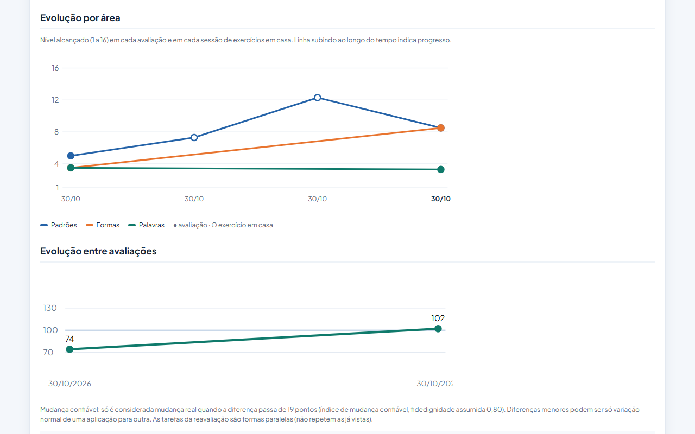

Como funciona
Três passos, sem instalar nada complicado.
Cadastre o paciente
Ficha completa, anamnese e termo de consentimento assinado na própria tela.
Envie para o tablet
O tablet mostra um código. Você digita no celular ou no computador e o teste começa.
Acompanhe e conclua
Veja ao vivo cada resposta, ajuste o nível se precisar e receba o relatório pronto no fim.
Feito para crianças, inclusive autistas
Telas calmas e previsíveis, seguindo as orientações de acessibilidade para pessoas autistas.
- Uma tarefa por vez, sempre no mesmo lugar
- Botões e figuras grandes, iguais em qualquer aparelho
- Modo calmo: cores suaves e nada se mexe
- Instruções faladas, com botão "Ouvir de novo"
- Sem sons de susto, sem nada piscando

O que a clínica recebe
Menos tempo com papel, mais tempo com o paciente.
Relatório completo
Perfil por área (modelo CHC), índices compostos, validade da aplicação, análise de erros e síntese para revisão.
Laudo e devolutiva
Rascunho do laudo no modelo da Resolução CFP 06/2019 e devolutiva em linguagem simples, com o logo da sua clínica.
Família por WhatsApp
Link da devolutiva (sem números de QI) e exercícios em casa com retorno automático para você.
Evolução no tempo
Gráfico de cada área ao longo das avaliações e dos exercícios em casa, com mudança confiável.
Questionários
SNAP-IV, ASRS, PHQ-9, GAD-7, M-CHAT-R, Vanderbilt e Autonomia, respondidos pelo link.
Segurança e LGPD
Cada profissional vê só os seus pacientes, registro de acessos, verificação em duas etapas e cópia diária no computador.

Áreas avaliadas
- Raciocínio fluido
- Memória de trabalho
- Visuoespacial
- Velocidade de processamento
- Vocabulário e conhecimento
- Raciocínio quantitativo
- Atenção e funções executivas
- Memória de palavras e figuras
- Leitura, escrita e matemática
- Linguagem e teoria da mente
- Coordenação e tempo de reação
- Orientação
Participe da fase de testes
Clínicas e profissionais parceiros usam o NeuroTrilha de graça durante o desenvolvimento e continuam com acesso gratuito depois. A sua experiência ajuda a definir o sistema.
Fale com a RMD: [telefone / WhatsApp] · [e-mail]
O NeuroTrilha está em desenvolvimento: os resultados são estimativas de um instrumento experimental, sem normas brasileiras próprias, e não substituem a avaliação do profissional.